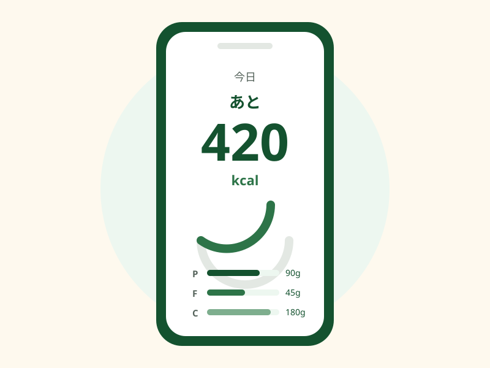
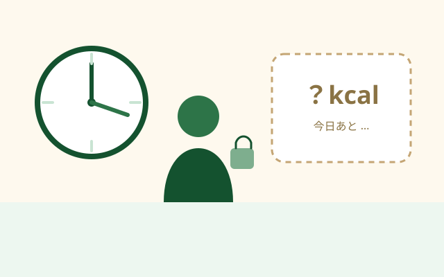
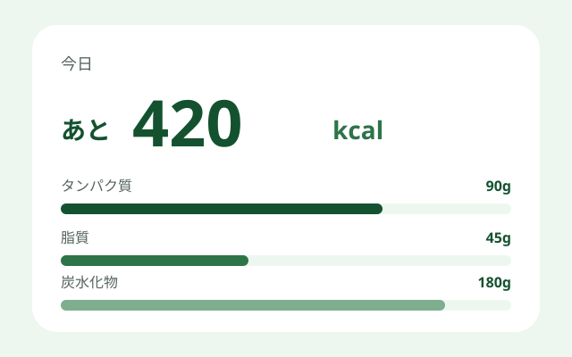
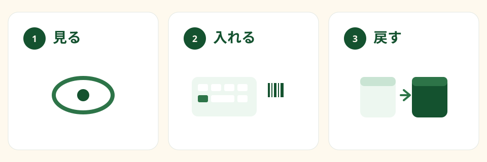
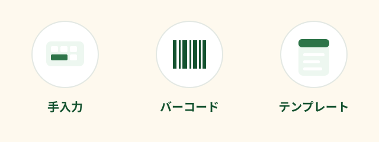
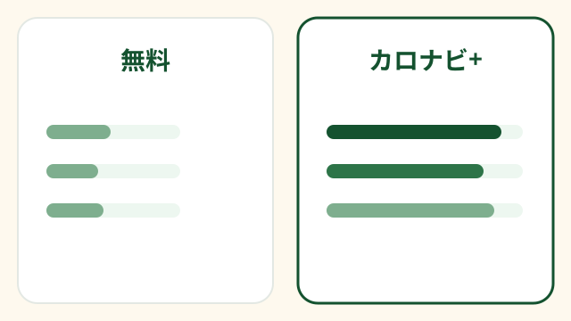

無料の目安
公開食品検索 5回/日、食事テンプレート 3、運動テンプレート 3。
カロナビ
カロナビは、食事・運動・体重をまとめて見るエネルギー管理アプリです。中心機能は「今日あと何kcalか」とPFCの目安で、毎日の次の一手を短くすることです。診断や治療のためのアプリではありません。有料オプション「カロナビ+」の予定価格は月額480円／年額4,800円で、最終は App Store の購入画面表示が正です。
食事・運動・体重をまとめて、毎日の次の一手を短くする。記録アプリではなく、エネルギー管理アプリ「カロナビ」。
24歳前後の忙しい会社員向け。難しい計算は裏で、表には今日の判断だけ。
App Storeで公開中（リンク準備中）

食べたものを残しても、今日あとどれくらい食べられるかが曖昧なままなら、次の一手は遅れます。忙しい日ほど、細かい栄養アドバイスより先に必要なのは、今の収支です。

減量・維持・増量の目標に対して、今日あと何kcalかと、タンパク質・脂質・炭水化物の目安をまとめて見せます。医療の診断や治療のためのアプリではありません。



公開食品検索 5回/日、食事テンプレート 3、運動テンプレート 3。
公開食品検索やテンプレートの上限を拡大します。
予定価格（作業ベース）: 月額480円／年額4,800円（年額は月換算で約2ヶ月分お得）。
最終の料金は App Store の購入画面表示が正です。

食事・運動・体重をまとめて、「今日あと何kcalか」から次の一手を短くするエネルギー管理アプリです。診断や治療のアプリではありません。
他社を貶す比較はしません。記録やアドバイスが厚いサービスがある一方、カロナビは「今日のエネルギー判断」を主役にした設計です。用途の違いです。
基本機能は無料枠があります。カロナビ+の予定価格は月額480円／年額4,800円です。最終は App Store の購入画面表示が正です。
App Storeで公開しています。
いいえ。一般的な式に基づく推定であり、診断・治療目的ではありません。